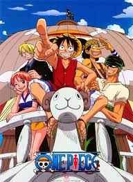
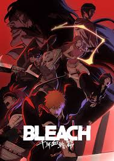

Your Portal to Every Universe
The Quiet Corner for Every Otaku
The Quiet Corner for Every Otaku
Welcome to AnimeZone, a hand-crafted corner of the internet dedicated to the art of Japanese animation. Whether you’re a seasoned otaku or just starting your first series, this space is designed to help you discover your next favorite story. From deep-dives into seasonal hits to celebrating the timeless classics that defined a generation, AnimeZone is a tribute to the creators, the characters, and the community that makes this medium unforgettable.In a world of endless streaming options, we cut through the noise to bring you curated recommendations, essential watchlists, and insightful breakdowns. This static hub serves as a simplified, distraction-free resource for exploring high-quality animation, ensuring that the best stories are always within your reach.

Wealth, fame, power—the man who acquired everything in this world, the Pirate King, Gold Roger. His final words sent countless souls to the seas. Now, AnimeZone invites you to join the voyage. One Piece is more than just a series; it’s a twenty-year epic of friendship, freedom, and the unbreakable will of a crew chasing the impossible. Set sail with us as we chart the history of the Grand Line.

In a world where strength is forged in solitude and bonds are earned through sacrifice, one boy’s dream changed the fate of the Hidden Leaf. AnimeZone welcomes you to the story of Naruto Uzumaki—the outcast who vowed to become Hokage. From the legendary Zabuza arc to the world-altering stakes of the Fourth Shinobi World War, we celebrate the journey of a ninja who never went back on his word.

Between the world of the living and the realm of the dead lies the Soul Society—and the guardians who protect the balance. AnimeZone brings you into the world of Ichigo Kurosaki, a substitute Soul Reaper with a blade strong enough to shatter fate. From the icy heights of the Seireitei to the desolate sands of Hueco Mundo, rediscover the style, the swords, and the spirit that redefined anime action.